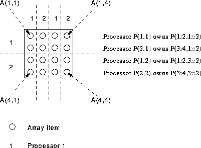

PROGRAM Skwiffy
IMPLICIT NONE
REAL, DIMENSION(4,4) :: A, B, C
!HPF$ PROCESSORS, DIMENSION(2,2) :: P
!HPF$ DISTRIBUTE (BLOCK,CYCLIC) ONTO P :: A, B, C
B = 1; C = 1; A = B + C
END PROGRAM Skwiffy

For more information, click here